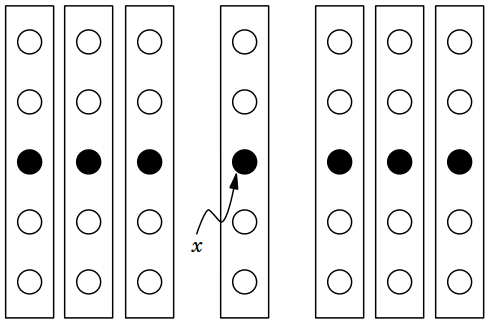

Programming Assignments
CSci 227: Programming Methods
Department of Computer Science
Hunter College, City University of New York
Spring 2025
All students registered by Wednesday, 28 August are sent a Gradescope registration invitation to the email on record on their Blackboard account. If you did not receive the email or would like to use a different account, write to csci227@hunter.cuny.edu. Include in your email that you not receive a Gradescope invitation, your preferred email, and your EmpID. We will manually generate an invitation. As a default, we use your name as it appears in Blackboard/CUNYFirst (to update CUNYFirst, see changing your personal information). If you prefer a different name for Gradescope, include it, and we will update the Gradescope registration.
General Notes
These program builds on the concepts and code developed during lecture and through the reading. Mastery of material is assessed via
- Autograding of the program submitted to Gradescope, and
- Final exam on the material.
Autograder Notes
Submitted code must be in Python, using only the specified libraries. The autograder expects a .py file and does not accept iPython notebooks. Since all assignments are designed to be uploaded as a single file, the autograder is set up for direct file upload instead of Github. If submitting directly (drop-and-drag onto the webpage), the file name is flexible but must have the extension .py.
Also, to receive full credit, the code should be compatible with Python 3.6 (the default for the Gradescope autograders).
To encourage starting early on programs, bonus points are given for early submission. A bonus, up to 10% of the program grade, are possible. Programs submitted 48 hours early receive 1 points, prorated by hour. For example, if you turn in the program 24 hours early, then the bonus poins are: (28 hours/48 hours)*1 points = (1/2)*1 points = 0.5 point.
To get full credit for a program, the file must include in the opening comment:
- Your name, as it appears in your Gradescope registration.
- The email you are using for Gradescope.
- A list of any resources you used for the program. Include classmates and tutors that you worked with, along with any websites or tutorials that you used. If you used no resources (other than the class notes and textbooks), then you should include the line: "No resources used."
"""
Name: Thomas Hunter
Email: thomas.hunter1870@hunter.cuny.edu
Resources: Used python.org as a reminder of Python 3 print statements.
"""
Good style accounts for 30% of the program grade. We are following the standard PEP 8 style guide for Python code. As part of the autograder scripts, your program is run through a static code analyser (aka a "linter").
- We are using Pylint which reports warnings and errors, including message codes, and then scores the code on a scale from 0 to 10. We multiply your percentage score by 3 (25% of the total) to determine the style grade. For example, if pylint scores your program 9, your style grade is (9/10) * 2.5 = 2.25
- See the Pylint website for tutorials, FAQ's and standard warnings.
- PEP 8 specifies that variable names should be at least 3 characters long, but it is long standing convention that DataFrames are named
df. For the autograders, we have includeddfin the "good-names" that are accepted. This can be done locally with.pylintrcfiles or using the command-line optionpylint --good-names=df. - Most IDE's have linting available: for example, see pylint in PyCharm and Linting Python in VSCode.
Programming Assignments
-
Due Date: 5pm, Wednesday, 5 February
Reading: Textbook: Chapter 1 & Lab 1
Available Libraries: Core Python 3.6+Hello
Write a Python program that prints "Hello, World!" to the screen. For full credit, make sure to follow Python style guide and include introductory comments.
Hint: See style & pylint in Lecture 1 and Lab 1.
-
Due Date: 5pm, Friday, 7 February
Reading: Textbook: Chapter 1 & Lab 1
Available Libraries: Core Python 3.6+Leap Years
Write a function
is_leap()that takes an integer between 1000 and 10,000 and returnsTrueif it is leap year andFalseotherwise. The following conditions are used to determine leap years:If the year is divisible by 4 but not divisible by 100 unless the year is divisible by 400.
For example, 2000 and 2400 are leap years, while 1900 and 2100 are not leap years.Notes:
- You should submit a file with only the standard comments at the top, the specified functions, and any helper functions you have written. The grading scripts will then import the file for testing.
- If your file includes code outside of functions, either comment the code out before submitting or use a main function that is conditionally executed (see Think CS: Section 6.8 for details).
Hint: See HackerRank function challenge from Lecture 1.
-
Due Date: 5pm, Monday, 10 February
Reading: Textbook: Chapter 1 & Lab 1
Available Libraries: Core Python 3.6+Duplicate Names
Write a function
duplicates()that takes a list of names and returns a list of the names that occur more. If there are no duplicated names, your function should return an empty list (e.g.[])For example:
would print:names = ['Daniel','Dorothy','Bethany','Beth','Daniel','Georgi'] print(duplicates[names])["Daniel"]Hint: See classwork from Lecture 1 and the Program 2 notes above.
-
Due Date: 5pm, Tuesday, 11 February
Reading: Textbook: Chapter 1 & Lab 1
Available Libraries: Core Python 3.6+Unique Visitors
When students visit the lab, their EmpID is stored as an 8-digit string. Many students visit multiple times, but we are interested in the total number of unique visitors to the lab. Write a function
unique_visitors()that takes a list of 8-digit strings and returns the number of unique strings that occur.Your function should also screen out any strings that are too long (more than 8 digits) or too short (less than 8 digits) and not include those in the final count returned.
For example:
would print:ids = ['12345678','11223344','123','12345678'] print(f"The number of unique visitors is {unique_visitors(ids)}.")
since there are 3 entries of the correct length but only 2 unique ones (the first and fourth entries are duplicates of each other).The number of unique visitors is 2.Hint: See classwork from Lecture 1 and the Program 2 notes above.
-
Due Date: 5pm, Wednesday, 19 February
Reading: Textbook: Chapter 1 & Lab 2
Available Libraries: Core Python 3.6+Hexadecimal Plus One
In Lab 2, we worked through LC 66 (Plus One), which took a large number, represented as a list of digits and returned its value incremented by one. For this question, write a function:
def hex_plus_one(digits: List[str]) -> List[str]:that takes a large number stored as a list of hexadecimal digits (the characters from '0','1',...'9','A','B','C','D','E','F' representing the digits 0,1,...9,10,11,12,13,14,15) and returns the large number incremented by 1.
For example, if the list is
['1','2','F'], then the function should return['1','3','0']since incrementing the last digit, 'F', by 1 gives 10, or '0' with a carry of 1. The next to last digit is '2' with the carry becomes '3'.Hint: See Lab 2.
-
Due Date: 5pm, Thursday, 20 February
Reading: Textbook: Chapter 1 & Lab 2
Available Libraries: Core Python 3.6+Longest Words
Write a program that asks the user for the names of an input file and output file. Your program should read in the input file and for each line, write the longest word to the output file (if there are more than longest word on a line, the first is written).
For example, if you ran your program:
If the input file,Enter your input file name: milne.txt Enter your output file name: longest.txtmilne.txtcontained:It is more fun to talk with someone who doesn't use long, difficult words but rather short, easy words like 'What about lunch?' --A.A. MilneThen the output file,
output.txt, would contain:more someone difficult lunch?' --A.A.Note: to simplify this program, words are contiguous characters, separated by spaces (no need to strip off punctuation marks).
-
Due Date: 5pm, Monday, 24 February
Reading: Textbook: Chapter 1 & Lab 2
Available Libraries: Core Python 3.6+Average Grades
Write a program that asks the user for the names of an input file and output file. Each line of the input file has a name, followed by grades, separated by spaces. Your program should read in the input file and for each line, write the name to the output file and the average of the grades, separated by a space.
For example, if you ran your program:
If the input file,Enter your input file name: grades.txt Enter your output file name: ave.txtgrades.txtcontained:Amy 10 8 8 4 Beth 10 11 Chaaya 10 0 11 9 9 9 Daiyu 8 8 5 10 10 10 Esme 3 9 6Then the output file,
ave.txt, would contain:Amy 7.5 Beth 10.5 Chaaya 8.0 Daiyu 8.5 Esme 6.0 -
Due Date: 5pm, Tuesday, 25 February
Reading: Textbook: Chapter 1 & Lab 2
Available Libraries: Core Python 3.6+Proper Nouns
Write a function that takes a string and returns a list of all words that start with capital letter. Words in the string are separated by spaces.
def find_proper_nouns(data: str) -> List[str]:For example, if you ran your program:
data = "Jack and Jill went up the hill." nouns = find_proper_nouns(data) print(nouns)Then the output would be:
["Jack","Jill"]Hints:
- See notes for Program 2 about code outside of functions.
- There's lots of ways to test for the first letter capital. One easy way is if
word, thenword[0] == word[0].upper()will return true if the first letter is upper case.
-
Due Date: 5pm, Thurasday, 27 February
Reading: Textbook: Chapter 2 & Lab 3
Available Libraries: Core Python 3.6+Anagram
Write a function that takes two string and returns
Trueif they are anagrams andFalseotherwise. The strings will only consist of letters, and your function should be case insensitive (e.g. 'A' and 'a' are considered the same).def anagram(word_1: str, word_2: str) -> bool:For example, if you ran your program:
word_1 = 'coast' word_2 = 'water' word_3 = 'tacos' print(f'{word_1} and {word_2}: function returns {anagram(word_1,word_2)}.') print(f'{word_1} and {word_3}: function returns {anagram(word_1,word_3)}.')Then the output would be:
coast and water: function returns False. coast and tacos: function returns True.Hints:
- See notes for Program 2 about code outside of functions.
- See Classwork 3 and Lab 3 where we sketch out this problem.
-
Due Date: 5pm, Wednesday, 5 March
Reading: Chapter 2 & Lab 3
Available Libraries: Core Python 3.6+, timeFunction Timer
Following the textbook's example in Section 2.2, write a function that returns the result and time taken by an inputted function and returns the result of the function and the time it takes. Your function should also have a keyword argument,
num, with default value10that is the input when running the function.fnc_timer(fnc, num = 10)For example, if you had defined the summing functions we had in lecture (and Section 2.2 of the textbook):
def sum_form(num): """ Computes sum of first n numbers, using formula. """ return num*(num+1)/2 def sum_loop(num): """ Computes sum of first n numbers, using loop. """ result = 0 for iii in range(1,num+1): result = result + iii return resultThen we can use those functions to test the
fnc_timer:def main(): """ Testing the timer: """ print(f"For sum_form: {fnc_timer(sum_form)}\n") for num in range(1000,20_000,1000): result, time_taken = fnc_timer(sum_form,num=num) print(f"For sum_form with num={num}, result = {result} in time {time_taken:.10f}.") print() for num in range(1000,20_000,1000): result, time_taken = fnc_timer(sum_loop,num=num) print(f"For sum_loop with num={num}: result = {result} in time {time_taken:.10f}.") if __name__ == "__main__": main()Then the output would be:
For sum_form: (55.0, 1.4781951904296875e-05) For sum_form with num=1000, result = 500500.0 in time 0.0000021458. For sum_form with num=2000, result = 2001000.0 in time 0.0000021458. For sum_form with num=3000, result = 4501500.0 in time 0.0000011921. For sum_form with num=4000, result = 8002000.0 in time 0.0000009537. For sum_form with num=5000, result = 12502500.0 in time 0.0000011921. For sum_form with num=6000, result = 18003000.0 in time 0.0000009537. For sum_form with num=7000, result = 24503500.0 in time 0.0000011921. For sum_form with num=8000, result = 32004000.0 in time 0.0000009537. For sum_form with num=9000, result = 40504500.0 in time 0.0000009537. For sum_form with num=10000, result = 50005000.0 in time 0.0000011921. For sum_form with num=11000, result = 60505500.0 in time 0.0000009537. For sum_form with num=12000, result = 72006000.0 in time 0.0000007153. For sum_form with num=13000, result = 84506500.0 in time 0.0000009537. For sum_form with num=14000, result = 98007000.0 in time 0.0000009537. For sum_form with num=15000, result = 112507500.0 in time 0.0000011921. For sum_form with num=16000, result = 128008000.0 in time 0.0000009537. For sum_form with num=17000, result = 144508500.0 in time 0.0000011921. For sum_form with num=18000, result = 162009000.0 in time 0.0000009537. For sum_form with num=19000, result = 180509500.0 in time 0.0000009537. For sum_loop with num=1000: result = 500500 in time 0.0001218319. For sum_loop with num=2000: result = 2001000 in time 0.0002119541. For sum_loop with num=3000: result = 4501500 in time 0.0003182888. For sum_loop with num=4000: result = 8002000 in time 0.0004231930. For sum_loop with num=5000: result = 12502500 in time 0.0005140305. For sum_loop with num=6000: result = 18003000 in time 0.0006108284. For sum_loop with num=7000: result = 24503500 in time 0.0007030964. For sum_loop with num=8000: result = 32004000 in time 0.0008106232. For sum_loop with num=9000: result = 40504500 in time 0.0009038448. For sum_loop with num=10000: result = 50005000 in time 0.0010118484. For sum_loop with num=11000: result = 60505500 in time 0.0011117458. For sum_loop with num=12000: result = 72006000 in time 0.0011761189. For sum_loop with num=13000: result = 84506500 in time 0.0012700558. For sum_loop with num=14000: result = 98007000 in time 0.0013661385. For sum_loop with num=15000: result = 112507500 in time 0.0015220642. For sum_loop with num=16000: result = 128008000 in time 0.0015380383. For sum_loop with num=17000: result = 144508500 in time 0.0015838146. For sum_loop with num=18000: result = 162009000 in time 0.0016670227. For sum_loop with num=19000: result = 180509500 in time 0.0017712116.The first line comes from our first call to
fnc_timerthat uses the default value fornumwhen timing the function. The next lines are from the for-loops where we supply a value fornum.Hints:
- Don't overthink the question-- the function that you have to write is very short. The difficulty lies in putting the pieces together (functions as arguments, using keywords) into one function.
- Make sure to include the module for timing code (e.g.
import time.) - See Section 2.2 of the textbook and Lecture 3 where we discuss timing code and Lecture 4 where we recap function arguments.
- See notes for Program 2 about code outside of functions.
-
Due Date: 5pm, Saturday, 8 March
Reading: Textbook: Chapter 2 & Lab 4
Available Libraries: Core Python 3.6+Binary Search
For Classwork 4, we traced through the pseudocode for linear search and binary search. Convert the pseudocode for binary search into a function:
def binary_search(cards, min_ind, max_ind, target):The pseudocode from Classwork 4:
- If min_ind > max_ind,
- Return False
- Let mid = (min_ind+max_ind)//2
- If cards[mid] is target,
- Return True
- If cards[mid] < target,
- Return binary_search( cards, mid+1, max_ind, target )
- Return binary_search( cards, min_ind, mid-1, target )
For example, if you ran your program:
cards = [1,1,2,3,8,9,10,11,12] purples = ["amethyst","eggplant","grape","indigo","lavendar","lilac","magenta","plum","violet"] print(f"Is 7 in the cards? {binary_search(cards,0,len(cards)-1,7)}") print(f"How about 8? {binary_search(cards,0,len(cards)-1,8)}\n") print(f"Is mauve one of our purples? {binary_search(purples, 0,len(purples)-1,'mauve')}")Then the output would be:
Is 7 in the cards? False How about 8? True Is mauve one of our purples? FalseHints:
- See notes for Program 2 about code outside of functions.
- See Classwork 4 where we sketch out this problem.
-
Due Date: 5pm, Monday, 10 March
Reading: Textbook: Chapter 1 & Lab 4
Available Libraries: Core Python 3.6+Find the Duplicate Number
Given an array of integers nums containing
n + 1integers where each integer is in the range[1, n]inclusive.There is only one repeated number in nums, return this repeated number. Your function should be:
def find_duplicate(nums : List(int)) -> int:Note: You must solve the problem without modifying the array nums and uses only constant extra space.
Example 1: Input: nums = [1,3,4,2,2] Output: 2 Example 2: Input: nums = [3,1,3,4,2] Output: 3Hints:
- This is LeetCode 287. As with all the programming challenges, try to program it on your own before seeking help from the lab or on-line.
- Many of the solutions you will find on-line use techniques we have not learned yet. There is a way to do this using binary search. Here's an approach:
- All the integers in
numsappear only once except for precisely one integer which appears two or more times. - Let's do binary search on values [1,...,n], instead of the indices (of which there's n+1, since there's a duplicate).
- To find the duplicate, let's look at the middle value. For the first example above,
nums = [1,3,4,2,2], it's 4/2 = 2. How many elements are at most 2? And how many are larger than 2? - We can compute that with a simple loop that check each value and counts those <= 2. 3 entries in the list are at most 2 and 2 entries are more than 2. So, we have 3 elements that are 1 or 2 and 2 entries that are 3 or 4. Since only one number is duplicated and we have 2 entries that are in [3,...,4], the duplicate number must be either 1 or 2.
- Let's repeat our loop with guess of 1. This time, we have 1 entry in the list with value < 1 and 4 entries that are 2,3,4. 1 is not the answer. So, it must be 2.
- All the integers in
-
Due Date: 5pm, Wednesday, 12 March
Reading: Textbook: Chapter 1 & Lab 4
Available Libraries: Core Python 3.6+Median Value
In lectures and labs, we have compute minimum, maximum, mean (average), and mode (most common value) for lists of numbers. For this program, we're computing the median, or value for which half the numbers in the list are smaller and half the list are larger. For lists of even length, we will arbitrarily choose the larger of the two middle values, if they differ.
An elegant way to compute the median, is to split the list into smaller lists, say each of length 5. Find the median of each and save those to a list. And repeat this on your new list. If you keep repeating, you will, recursively, found the median value.

(From Wiki: Pashapanther. )The pseudocode for computing the median of medians is:
median_of_medians(nums)- Let n be the length of nums.
- If n <= 2, return nums[-1].
- Let med_list be an empty list.
- Divide nums into n/5 sublists of length 5, except possibly the last sublist which has the remaining elements (1 to 5 of them).
- For each sublist, compute median and append to med_list.
- Call median_of_medians(med_list).
For this question, write the function that finds the median of lists of 5 or fewer values (that is, implement line 5 above):
def median_5(nums: List) -> int:that takes a list of numbers of 5 (or fewer) elements and returns the median value. If the list is of even length, it returns the larger of the two middle values.
For example, if
nums = [1,8,2,3,7], the number for that has half the elements below it and half above it is 3, so, your function would return 3.For example, if
nums = [10,3,3,4], the values in the middle are 3 and 4, so, your function returns the larger, or 4. -
Due Date: 5pm, Friday, 14 March
Reading: Textbook: Chapter 1 & Lab 5
Available Libraries: Core Python 3.6+Fraction Class
Building on the Fraction class (fraction.py) from Lab 5, write two functions:
__eq__(self, other):which returnsTrueifselfandotherare equivalent fractions andFalseotherwise.__mul__(self, other):which multiplies the fractionsselfandotherand returns the simplified product.
For example, if the Fraction class is in the file
fraction.pyfrom fraction import * f1 = Fraction(1, 2) f2 = Fraction(2, 3) f3 = f1 * f2 print(f"{f1} times {f2} is {f3}.") print(f"Is f3 equivalent to f1: {f3 == f1}.")would output:
1/2 times 2/3 is 1/3. Is f3 equivalent to f1: False.Hints:
- In Lab 5, we worked through the Fraction class from
ThinkCS Chapter 18. In the textbook, addition (
__add__) is written. Follow that template for the functions above. - A list of the function names for arithmetic and boolean operators can be found at the end of the Geeks for Geeks tutorial.
-
Due Date: 5pm, Monday, 17 March
Reading: Textbook: Chapter 1 & Lab 5
Available Libraries: Core Python 3.6+, pandasSenators
Write a program, using the
pandaspackage, that asks the user for the name of an input CSV file and the name of an output CSV file. The program should open the file name provided by the user. Next, the program should select rows where the fieldsenate_classis non-empty and write thefirst_nameandlast_nameto a file with the output file name provided by the user.For example, if the file was legislators-current.csv with the first 3 lines of:
Then a sample run of the program:last_name,first_name,middle_name,suffix,nickname,full_name,birthday,gender,type,state,district,senate_class,party,url,address,phone,contact_form,rss_url,twitter,facebook,youtube,youtube_id,bioguide_id,thomas_id,opensecrets_id,lis_id,fec_ids,cspan_id,govtrack_id,votesmart_id,ballotpedia_id,washington_post_id,icpsr_id,wikipedia_id Brown,Sherrod,,,,Sherrod Brown,1952-11-09,M,sen,OH,,1,Democrat,https://www.brown.senate.gov,503 Hart Senate Office Building Washington DC 20510,202-224-2315,http://www.brown.senate.gov/contact/,http://www.brown.senate.gov/rss/feeds/?type=all&,SenSherrodBrown,SenatorSherrodBrown,SherrodBrownOhio,UCgy8jfERh-t_ixkKKoCmglQ,B000944,00136,N00003535,S307,"H2OH13033,S6OH00163",5051,400050,27018,Sherrod Brown,,29389,Sherrod Brown Cantwell,Maria,,,,Maria Cantwell,1958-10-13,F,sen,WA,,1,Democrat,https://www.cantwell.senate.gov,511 Hart Senate Office Building Washington DC 20510,202-224-3441,http://www.cantwell.senate.gov/public/index.cfm/email-maria,http://www.cantwell.senate.gov/public/index.cfm/rss/feed,SenatorCantwell,senatorcantwell,SenatorCantwell,UCN52UDqKgvHRk39ncySrIMw,C000127,00172,N00007836,S275,"S8WA00194,H2WA01054",26137,300018,27122,Maria Cantwell,,39310,Maria Cantwell
And the first three lines ofEnter input file name: legislators-current.csv Enter output file name: senatorNames.csvsenatorNames.csvwould be:first_name,last_name Sherrod,Brown Maria,CantwellHint: Use pandas to read in the CSV and select the name columns. When saving to the file, only save the columns (not the index). For example,
df_out.to_csv(out_name, index=False) -
Due Date: 5pm, Wednesday, 19 March
Reading: Textbook: Chapter 3 & Lab 6
Available Libraries: Core Python 3.6+Linked List Search
Using the Node class from Lab 6, write a function that searches a linked list and returns
Trueif found andFalseotherwise. Your function should be of the format:
where adef search_list( lst : Optional[ListNode], target : int) -> bool:ListNodeis:class ListNode: def __init__(self, val=0, next_node=None): self.val = val self.next = next_nodeFor example, if
targetis3andlst_1is:
then
search_list( lst_1, target )would returnTrue. Writing this in Python:lst = ListNode(2) lst.next = ListNode(4) lst.next.next = ListNode(3) print(f"Is 3 in lst? {search_list(lst,3)}") print(f"Is 10 in lst? {search_list(lst,10)}")The resulting output:
Is 3 in lst? True Is 10 in lst? False
A helpful function for printing out your list:
def list_2_str( lst ): """ Helper function for printing out lists """ current = lst lst_str = "" while current is not None: lst_str = lst_str + "->" + str(current.val) current = current.next if len(lst_str) > 0: #Get rid of leading "->" in string lst_str = lst_str[2:] return lst_str -
Due Date: 5pm, Friday, 21 March
Reading: Textbook: Chapter 3 & Lab 6
Available Libraries: Core Python 3.6+Balanced Parenthesis
Given a string
linethat contains alphanumeric characters as well as '(', ')', '{', '}', '[' and ']', determine if the input string is valid.An input string is valid if:
- Open brackets must be closed by the same type of brackets.
- Open brackets must be closed in the correct order.
- Every close bracket has a corresponding open bracket of the same type.
def is_valid(line: str) -> boolExamples:
- If
lineisprint("Hello"), thenis_valid(line)returnsTruesince the opening(is matched with). - If
lineiswords[-1].join(), thenis_valid(line)returnsTruesince the opening[is matched with]and(is matched with). - If
lineiswords[0), thenis_valid(line)returnsFalsesince there is an opening[but no matching]. - If
lineis(((words[0] == 'Hi') or (words[0] == 'Hello')) and (words[-1] == 'Bye')), thenis_valid(line)returnsTruesince if we look at the parentheses:((()())())they follow the matching rules.
Note: This is a variation on LC 20. See Classwork 6 in Lecture 6.
-
Due Date: 5pm, Monday, 24 March
Reading: Textbook: Chapter 3 & Lab 6
Available Libraries: Core Python 3.6+Increment Number
Using the Node class from Lab 6, assume each
valin a node contains a digit:0to9. Each linked list represents a large number in reverse order. For example, the list:The smallest part, or ones column, is 2. The tens column is 4. And the hundreds column is 3. So this represents 342.
Write a function that adds one to a large number and returns the value. Your function should be of the format:
where adef increment_num( lst : Optional[ListNode] ) -> Optional[ListNode]:ListNodeis:class ListNode: def __init__(self, val=0, next=None): self.val = val self.next = nextFor example, if
lst_1is2 -> 4 -> 3, thenincrement_num( lst_1 )would return a linked list with3 -> 4 -> 3.If
lst_2is9 -> 9 -> 1thenincrement_num( lst_2 )would return a linked list with0 -> 0 -> 2since adding one to 199 yields 200.Hint: Think about what happens when a digit is
9. See Classwork 7 and Lecture 7 for an example of adding large numbers. -
Due Date: 5pm, Wednesday, 26 March
Reading: Textbook: Chapter 3, Lab 5 & Lab 6
Available Libraries: Core Python 3.6+Palindromes
A phrase is a palindrome if, after converting all uppercase letters into lowercase letters and removing all non-alphanumeric characters, it reads the same forward and backward. Alphanumeric characters include letters and numbers. Given a string s, returnTrueif it is a palindrome, orFalseotherwise:
Examples:def is_palindrome(input_s: str) -> bool- If
input_s = "A man, a plan, a canal: Panama", then the output isTruesince "amanaplanacanalpanama" is a palindrome. - If
input_s = "race a car", then the output isFalsesince "raceacar" is not a palindrome. - If
input_s = " ", then the output isTruesince s is an empty string "" after removing non-alphanumeric characters, and an empty string reads the same forward and backward, it is a palindrome.
Note: This is LC 125. See Classwork 6 in Lecture 6 and Classwork 7.2 in Lecture 7.
- If
-
Due Date: 5pm, Friday, 28 March
Reading: Textbook: Chapter 3 & Lab 7
Available Libraries: Core Python 3.6+Checkout Lines
Write a function that models a grocery store checkout lines
def checkout_lines(carts: List) -> intthat takes a list of integers representing the number of items in customers carts and returns the amount of time it takes for all customers to checkout.
There are 3 checkout lines, and at each time step, one item can be processed. Any checkout with 0 items left to process takes the next customer from
carts.Example: Say
carts = [5,1,2,4,2].- At time 0, all checkers are available and we send the first 3 customers to checkers: 5,1,2 items to be processed.
- At time 1, we have processed an item, so, there's 4,0,1 items.
- Since Checker #2 is available, we send the next customer to them and decrease the other two checkers to get 3,4,0.
- Now, Checker #3 is available, so, we send the next customer there and decrease the other two to get 2,3,2.
- We continue sending customers to open checkers and decrementing counts until we reach 0,0,0. The function returns the total time which is 7.
More details:
Time Checker #1 Checker #2 Checker #3 0 0 0 0 1 5 1 2 2 4 0 1 3 3 4 0 4 2 3 2 5 1 2 1 6 0 1 0 7 0 0 0 -
Due Date: 5pm, Monday, 30 March
Reading: Textbook: Chapter 3 & Lab 7
Available Libraries: Core Python 3.6+Number Converter
In Section 3.8 from Lab 7, code was developed to convert decimal numbers into binary.
For this program, write a function that will convert decimal numbers into other base numbers (where the base is <= 10):
def number_converter(num: int, base=2:int) -> strThe default is to convert the number to binary (base = 2) but your function should allow the user to specify other bases.
For example:
print(f"15 base 2 is {number_converter(15)}.") print(f"15 base 8 is {number_converter(15,base=8)}.")would print:
15 base 2 is 1111. 15 base 8 is 17.